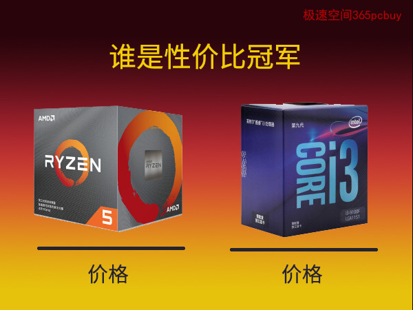
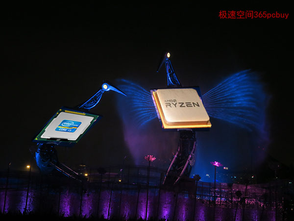
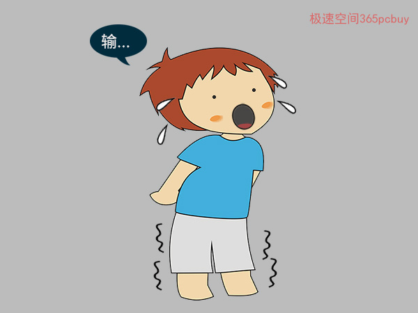
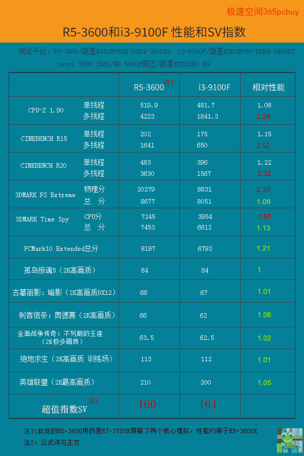

同样999元,GTX1650和RX580 2048SP性价比谁更好？买显卡还需考虑5个隐藏成本
发表时间：2019-11-10 文章浏览次数：2165 作者：pc大湿
前言
职业拳击赛按体重分为17个级别，同级对抗才公平。处理器对比也如此，人们习惯于把处理器“同级对比”，当性能差不多的时候，简单对比价格即可。但是，如果我们把思维从二维扩展到三维，要做一个“性价比总排名”，必然涉及到“跨级比武”。此文介绍一种方法，可以跨等级分析，从更宽广的角度了解CPU性能和价格的比值。
由于市场价格会变化，此文的观点具有一定时效性。

正文
intel武协临时主席至强铂金9282收到了邀请函，召集全体人员开会。
”这次比赛关系到咱们英特尔家族的声誉，重要性不言而喻，AMD的参赛选手是锐龙三代的R5-3600，各位看我们派哪位去合适？”
会场一片沉寂，大家都不吭声。
”R5-3600实力和我相当，这比赛怎么打都是输。“i7-9700说。
铂金9282说：”如果都不去，不战而降，不光我这个主席，大家的脸搁哪儿......“
”除非降点价。“不知谁小声嘀咕了一句。
”这肯定不行！国际处理器比赛组委会（OCIPC）已经采集了2019年9月22日市场价，这无法改变。“
一阵长时间的沉寂。
“要不，我去试试.......”轻轻一句，犹如在平静的湖面投下一个巨石，大家目光瞬间向会场的一个角落汇聚——身量不高，脸盘清瘦，手臂上的肌肉还算结实，是i3-9100F。
“你去？那有点恐怖啊.....”虽说这句有点缺德，但也符合逻辑，i5都被打得挂了彩，你去多半要弄个骨折、吐血，和上演恐怖片差不太多。
很快，有人忍不住了，捂住嘴巴“噗噗”几声。
i3-9100F怯怯地说：“按照这次的赛制，我还有一点点希望。”
铂金9282略一沉思：“说的没错，并非以性能论英雄，也许，他才是最佳人选。”
注1：胜负的判断是基于【超值指数SV】
公式：SV=【（P1X80%+P2X20%）/C】X100000，P1为CPU性能理论相对值，折算80%，P2为实际表现相对值，折算20%，而C则为【价格】，最后乘以100000，是为了让SV分更直观。此方式为大湿自用，以帮助分析CPU的性价比，非权威公式，每个用户可以根据自己的喜好，调整P1和P2的折算比例。P1越大，说明越重视理论值，P2越大，则更看重实际表现。

AMD这边听说intel的决赛选手为i3-9100F，一下子就热闹了。
”奥德赛、暗影要求这么高，咱锐龙3600也才跑60多帧，它能跑60？“
“那得先通知医院把救护车开来。”
“嗯，还要顺便带上石膏、绷带、夹板.....哈哈哈~”‘一句比一句难听。
R7-3800X则比较冷静：“有可能是个圈套，如果把对方打成残废，说不定会找我们要巨额赔偿。”
R5-3600是公认的性价比明星，一脸喜色：“放心，我知道他不经打，手里会有轻重。”
AMD武协新晋主席霄龙7H12不知什么时候出现在R5-3600旁边，把他拉到一边，叽咕说了一通，越说这位明星的脸色越不对，由晴转阴，由阴转霾，到了最后快站不稳了。
为什么情势急转直下呢？
原来，主席刚才给他讲了“P1+P2赛制”。
主席说：“由于民间呼声太高，不少人到国际处理器委员会去示威，要求修改规则，因此这次大赛和往届不同，增加了一项实际表现指数P2，折算20%计算总分值“
R5-3600一头雾水。
主席接着说：“如果按照往届规则，只有5项理论值，那么你的SV分大约是172分，i3-9100F大约为164分，还略胜一筹。但是，如果考虑实际表现，哪怕P2只计入20%比例，都是凶多吉少，可能要小输。”
一听到”要输“这个词，咱明星脚杆一软。

R5-3600忧心忡忡地回到家，把这事给跟班A4说了，此人学艺不精但脑筋转得快：”首先，得向组委会申请，限制对方只能用B360主板，这样它的内存频率就锁定在2400MHZ了，咱们用B450+DDR4-3600MHZ和他打。“
R5-3600点头称是：”还有没有其他能提升能力的办法？“
一丝诡谲的笑容从A4脸上划过：”当然有，就是服用激素！“
“这不行，要被查出来就完蛋了。”
“现在OCIPC还没有和国际反兴奋剂中心合作，不会尿检，怕什么！”
（注：R5-3600的主频为3.4~4.2GHz，在实测中，我们用的是R7-3700X屏蔽两个核心，其频率为3.6~4.4GHz，这相当于打了激素的R5-3600，基本等效于R5-3600X）
第二天一早，双方早早来到了赛场，裁判宣读了比赛规则——
1、双方硬盘、内存容量、显卡均相同。
2、系统相同。
二人拼尽了全力，结果如下。

比赛结果解读
1、C值是2019年9月22日这天的盒装实际价：i3-9100F为610元，R5-3600为1260元。
2、SV指数的原理是价格和性能成正比例关系，CPU性能比对手高100%，价格也比对手高100%，那么二者性价比打平，这个“性能”可以看做是CPU在高负载状态下能发挥出的极限值，P1就代表二者在极限状态性能的相对比值。右边相对性能的红色数值用于计算P1。
R5-3600的P1/C=【（红色数值之和）/5】/1260=0.00179
i3-9100F的P1/C=1/610=0.00164
为方便对比，同乘以10万，得：179和164，请注意，这个179分是”打了激素的R5-3600“的指数，其实际指数是172。
3、右边绿色数值用于计算P2，可得
R5-3600的SV={【（红色数值之和/5）X0.8+（绿色数值之和/9）X0.2】/1260}X100000=160
i3-9100F的SV=（1/610）X100000=164
也就是说，当两者价格为1260元和610元，完全按理论性能，那么R5-3600的性价比略高于i3-9100F。但是，哪怕只考虑少部分实际应用情况，i3-9100F则实现反超，并且，随着实际应用占比的加大，i3-9100F则一骑绝尘，会将R5-3600远远甩开，这看游戏FPS差距就知道。当然，四核的i3在游戏中的CPU占用偏高，当开多任务、多账号、直播等情况时，它就力不从心了。
注：这里仅把intel和AMD最新一代处理器纳入对比，如果考虑锐龙二代R5-2600，可能情况会有变化，但因其已经在清仓阶段，用清仓价和正价相比不太公平。二手商品也不宜和主流对比，否则，性价比最佳肯定属于一元一个的废品，这就失去了分析的意义。
比赛结束了，尽管R5-3600偷服了兴奋剂，但在P1+P2赛制下，仍然以4分之差输了，i3-9100F获得了冠军，intel武协一片欢腾。在当晚的庆功宴上，主席却说：“各位，你们知道为什么i3会赢吗？”
大家都说要归功于新赛制，主席说：“根本原因是——时至今日，AMD的ZEN2都是中量级、重量级人才，而没有轻量级的选手，我们只不过利用了规则取胜，大家不要高兴太早了，一旦他们开始培养轻量级队员（注2)，我们就真没法了啊！”
注2：这里的轻量级含义是AMD的ZEN2 R3系列，对标酷睿九代的i3。
结束语
此文并非鼓励弃R5-3600而选择i3-9100F，二者是不同档次的处理器，满足于不同的消费需求。只是，如果一定要把所有的主流CPU（只考虑酷睿九代和ZEN2）拉来在一起做个排名，我会把NO1的位置给i3-9100F，榜眼当属R5-3600，探花则为i5-9400F（盒装900多）。人们常说AMD性价比高，这句话范围大了些，在中档CPU的世界中，仍然是intel更超值，i3-9100F的纯游戏性能可以达到高档处理器的90%以上，而散片已经低到500元（20190923淘宝价），它确实是被忽略了。现实中也如此，聚光灯下只能看到明星，真正的王者都非常低调，往往站在最不起眼的角落。
（欢迎在下方留言写下你心中的NO1）